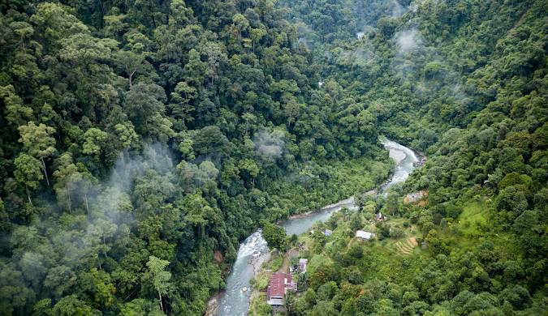
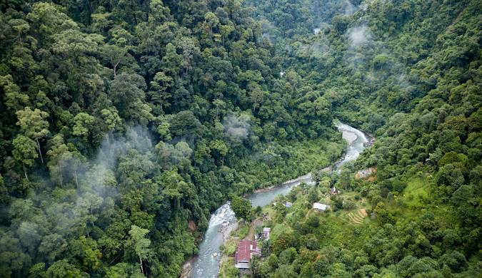

Tentang Sumatera Utara
Sumatera Utara, dengan keindahan alam yang memukau dan kekayaan budaya yang beragam, menjadi salah satu tujuan wisata unggulan di Indonesia. Dari pesona Danau Toba yang megah hingga keindahan alam pegunungan di Berastagi, setiap sudut provinsi ini menawarkan pengalaman yang tak terlupakan. Tidak hanya alamnya yang menawan, tetapi juga warisan budaya Batak yang kental, terjaga dalam tradisi dan situs bersejarah di berbagai daerah. Persebaran wisata di Sumatera Utara mencakup berbagai jenis destinasi, mulai dari wisata alam, budaya, hingga petualangan yang memikat hati para pengunjung. Setiap destinasi memiliki daya tarik tersendiri, menciptakan keberagaman yang menjadikan Sumatera Utara sebagai destinasi wisata yang wajib dikunjungi bagi siapa saja yang ingin menikmati keindahan Indonesia yang sesungguhnya.


 
